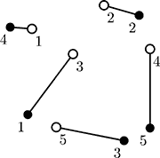

Home Page
F.A.Qs
Statistical Charts
Past Contests
Scheduled Contests
Award Contest
| Online Judge | Problem Set | Authors | Online Contests | User | ||||||
|---|---|---|---|---|---|---|---|---|---|---|
| Web Board Home Page F.A.Qs Statistical Charts | Current Contest Past Contests Scheduled Contests Award Contest | |||||||||
|
Language: Ants
Description Young naturalist Bill studies ants in school. His ants feed on plant-louses that live on apple trees. Each ant colony needs its own apple tree to feed itself. Bill has a map with coordinates of n ant colonies and n apple trees. He knows that ants travel from their colony to their feeding places and back using chemically tagged routes. The routes cannot intersect each other or ants will get confused and get to the wrong colony or tree, thus spurring a war between colonies. Bill would like to connect each ant colony to a single apple tree so that all n routes are non-intersecting straight lines. In this problem such connection is always possible. Your task is to write a program that finds such connection.  On this picture ant colonies are denoted by empty circles and apple trees are denoted by filled circles. One possible connection is denoted by lines. Input The first line of the input file contains a single integer number n (1 ≤ n ≤ 100) — the number of ant colonies and apple trees. It is followed by n lines describing n ant colonies, followed by n lines describing n apple trees. Each ant colony and apple tree is described by a pair of integer coordinates x and y (− Output Write to the output file n lines with one integer number on each line. The number written on i-th line denotes the number (from 1 to n) of the apple tree that is connected to the i-th ant colony. Sample Input 5 -42 58 44 86 7 28 99 34 -13 -59 -47 -44 86 74 68 -75 -68 60 99 -60 Sample Output 4 2 1 5 3 Source | ||||||||||
[Submit] [Go Back] [Status] [Discuss]
All Rights Reserved 2003-2013 Ying Fuchen,Xu Pengcheng,Xie Di
Any problem, Please Contact Administrator